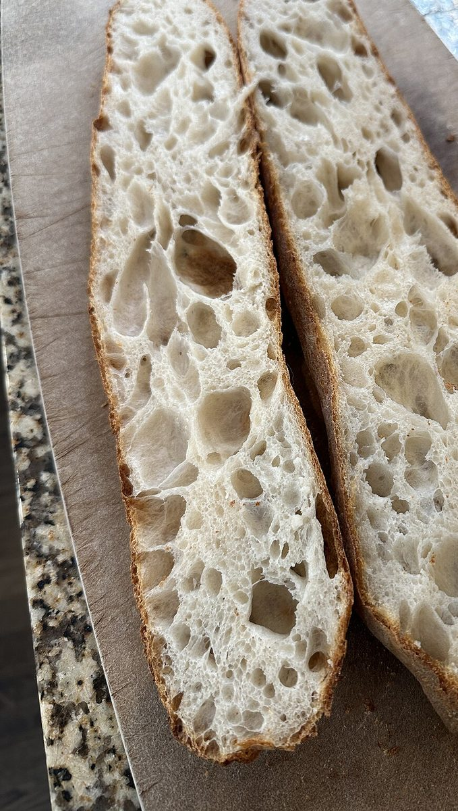
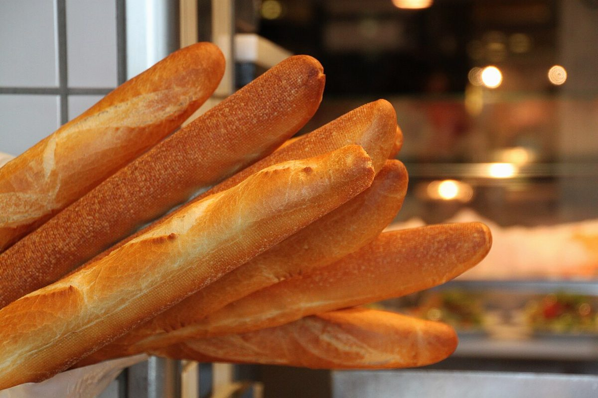

店のこと
店のこと
お店について確認できているのは、所在地とInstagramのアカウントだけです。
このページの「想像してみる」部分は、制作側が想像して書いたものです。お店の実際の様子・考え・メニューとは関係がありません。
0%
まだ見えないこと
- 営業時間・定休日
- メニュー・価格
- ご予約・駐車場
どれも準備中です。分かり次第、お店の情報に差し替えます。
50%
想像してみる
店名の「ゴースト」から、制作側は「透けるほど淡い白」を思い浮かべました。粉をふるったときの白、断面の気泡の白、紙の白。そんな淡い色を集めたら、このページの色になりました。お店の考えとは関係のない連想です。
100%
はっきり分かること
- 店名は「ゴーストベイカー」、業種はベーカリー
- 所在地は北海道小樽市緑３丁目１２−４１(〒047-0034)
- 電話番号はなし。連絡はInstagramから

